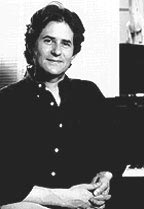
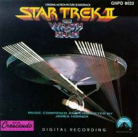

|

STAR TREK II:
THE WRATH OF KHAN
1982


Sinopse
comentada
Comentrios
Citaes
Efeitos
Especiais
Trilha Sonora
Trivia
Ficha
Tcnica
O
DVD

O momento decisivo na carreira do compositor chegou em 1982, quando a Paramount estava para lanar a aguardada primeira seqncia do controvertido "Jornada nas Estrelas: O Filme" (1979). Depois de despender 40 milhes de dlares no primeiro filme, o estdio decidiu economizar e liberou apenas daquele valor para "Jornada nas Estrelas II: A Ira de Khan".
O aperto oramentrio no permitiu a presena, na equipe tcnica do filme, de muitos nomes famosos e portanto caros. Mas a escolha dos profissionais no pde ser mais acertada, a comear pelo diretor e roteirista Nicholas Meyer, que dirigira em 1979 a interessante fico-cientfica "Um Sculo em 43 Minutos".
Para a msica, Jerry Goldsmith, que compusera a famosa partitura de "O
Filme", era caro demais, e o ento praticamente desconhecido Horner, que compusera scores de qualidade para filmes B como "Humanides das Profundezas" e "Mercenrios das Galxias", foi escolhido.
Segundo Horner, Nicholas Meyer contratou-o para fazer uma trilha mais acstica, com um senso de aventura em alto-mar, e indiscutivelmente teve sucesso nessa empreitada. Horner no titubeou em descartar o famoso tema criado por Goldsmith para o filme anterior, substituindo-o por um novo de sua autoria, ao qual agregou a introduo da msica da srie de televiso, de Alexander Courage.
Este vibrante Main Title, dedicado ao almirante Kirk e sua nave, Enterprise, o motivo propulsor do score: nele as dinmicas orquestraes de cordas, metais e percusso so traduzidas pela orquestra de 94 instrumentos em uma interpretao acima da mdia. Outro tema importante aquele dedicado ao vilo Khan, ouvido pela primeira vez na 2 faixa do CD, "Surprise Attack". um motivo ameaador, que inicia em tom baixo para logo em seguida ser interpretado em alto volume pela orquestra, notadamente nos confrontos da nave de Khan, a Reliant, com a Enterprise.
Sendo a trilha que impulsionou a carreira de Horner,
"A Ira de Khan" contm um grande nmero de "Hornerismos" que se repetiriam em trabalhos subseqentes (por exemplo, as fanfarras que so quase idnticas s de "Krull", "Rocketeer" e outros filmes...), agregados a composies extremamente criativas. Como se v uma partitura enrgica e voltada ao, que enfatiza as memorveis batalhas "navais" entre as duas naves estelares (Surprise Attack, "Kirks Explosive Reply), com alguns momentos contemplativos e lricos onde ouvimos o terceiro tema principal, dedicado ao capito Spock.
Introduzido na terceira faixa, "Spock", ele ser plenamente desenvolvido pela orquestra em Epilogue/End Title, quando nos revelado que o esquife do vulcano
repousa intacto no planeta Gnesis.
Em Battle In The Mutara Nebula o compositor cria efeitos de eco interessantes para metais e sopro, e faz referncia trilha de Goldsmith ao utilizar o Blaster Beam, instrumento de percusso metlico que em "O Filme" representava a nuvem aliengena. De um modo geral, a partitura de "A Ira de Khan" captura a viso militarista/naval do diretor Meyer para Jornada nas Estrelas, transmitindo um senso nutico que forma uma tima coreografia com os visuais.
Reparem na cena da Enterprise zarpando da doca espacial: Horner, com sua msica, nos faz sentir como se estivssemos assistindo partida de um navio pirata comandado por Errol Flynn... Em suma,
"A Ira de Khan" pode no ser melhor que o trabalho anterior, de Goldsmith, mas sua grandeza pica a coloca entre as melhores trilhas de
Jornada nas Estrelas. 